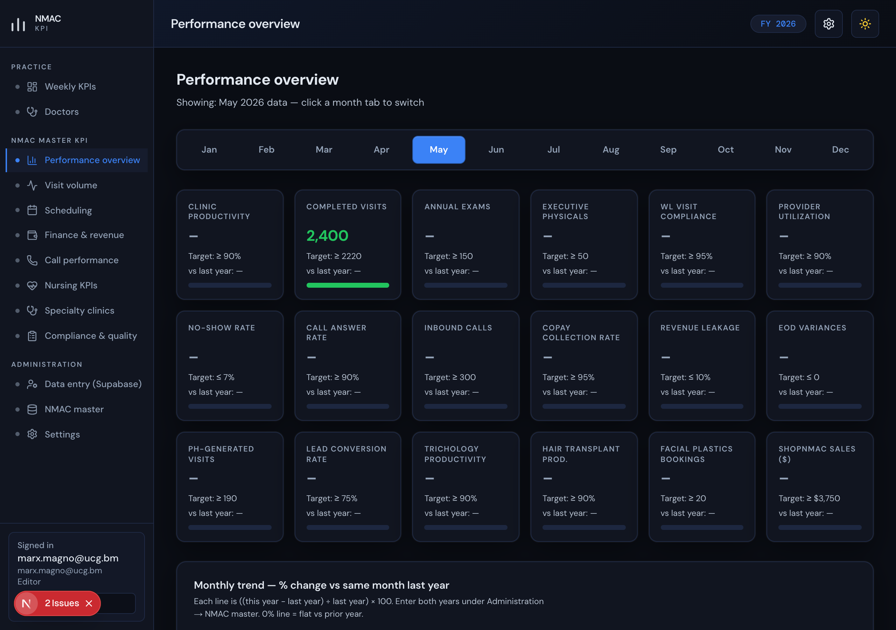
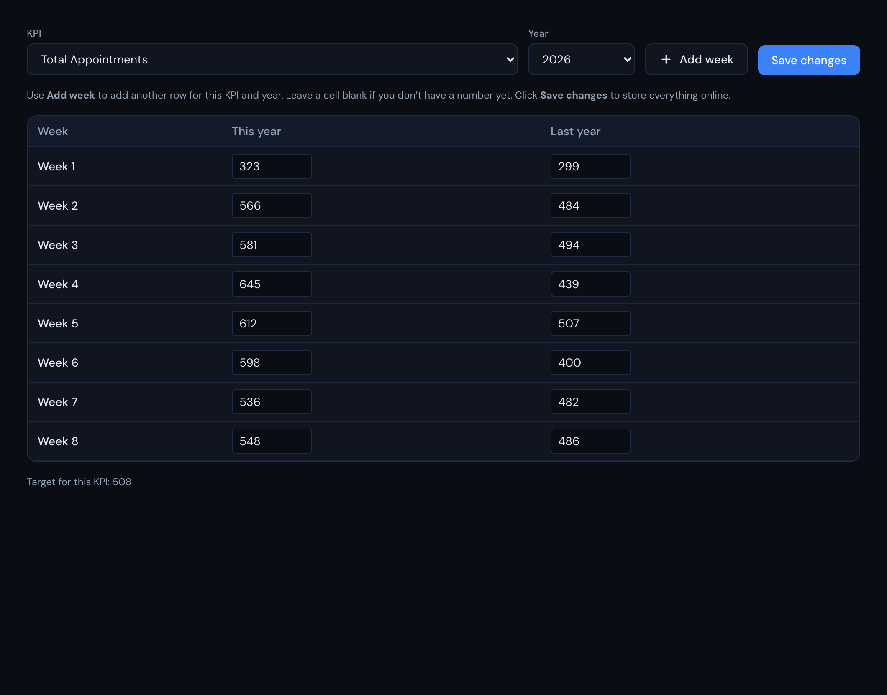
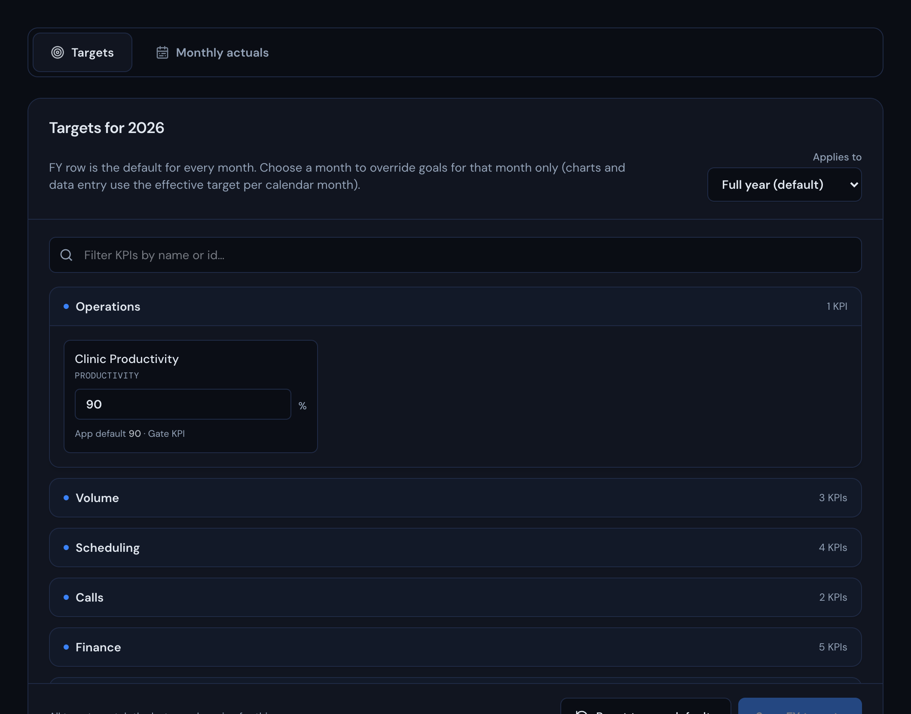
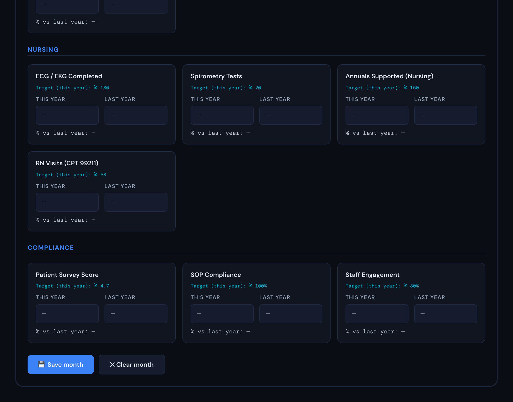
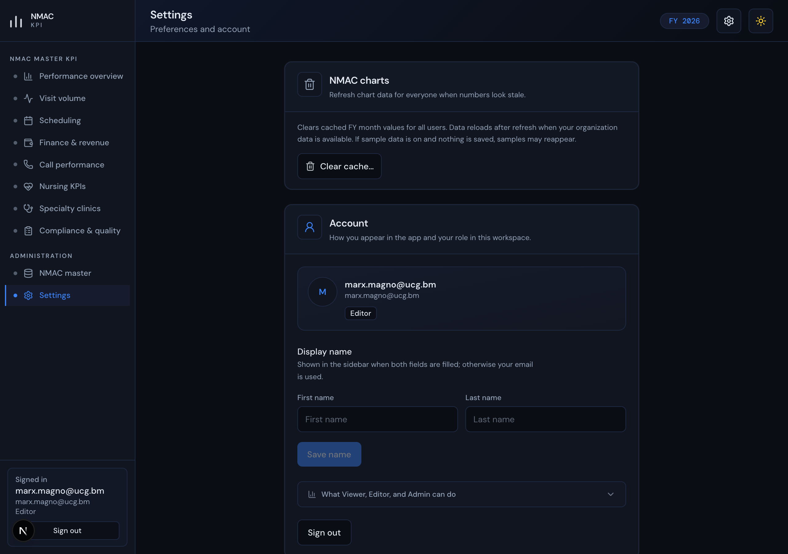

Editor guide with screenshots
North Shore Medical Center · Bitrix24
NMAC KPI shows practice performance: this year vs last year vs goals. Open it from Bitrix24; you sign in with your Bitrix email. If you see Access not available, ask an admin to add you as Editor. Check your name and role at the bottom of the sidebar.
Each section below matches one screenshot. Follow the steps, then find the same labels in the photo.
Where in the app: Left sidebar → NMAC master KPI → e.g. Performance overview (other chart pages work the same way)

Where in the app: Left sidebar → Administration → Data entry

Where in the app: Administration → NMAC master → Targets tab (selected)

Where in the app: Administration → NMAC master → Monthly actuals tab (selected)

Where in the app: Left sidebar → Administration → Settings
